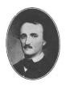
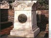

A Brief History
|  |
Edgar Allan Poe, son of Actress Eliza Poe and Actor David Poe Jr., born , was mostly known for his poems and short tales and his literary criticism. He has been given credit for inventing the detective story and his psychological thrillers have been influences for many writers worldwide.
In 1827 Edgar published his first book,
|
- The Cask of Amontillado.
- The Pit and the Pendulum.
- The Raven.
- The Tell-Tale Heart.
- A Tale of the Ragged Mountains.
The Poe Museum
|
The Poe Museum provides a retreat into early nineteenth century Richmond where Edgar Allan Poe lived and worked. The museum features the life and career of Edgar Allan Poe by documenting his accomplishments with pictures, relics, and verse, and focusing on his many years in Richmond. Opened in 1922, in The Old Stone House, the museum is only blocks away from Poe's first Richmond home and his first place of employment, the Southern Literary Messenger. |
Quotes of Edgar Allan Poe

|
This maiden she lived with no other thought, Than to love and be loved by me. |
The Death of Edgar Allan Poe
|
Poe suffered from bouts of depression and madness, and he attempted suicide in 1848. In September the following year he disappeared for three days after a drink at a birthday party and on his way to visit his new fiancée in Richmond. He turned up in a delirious condition in a Baltimore gutter and died on . |
 |